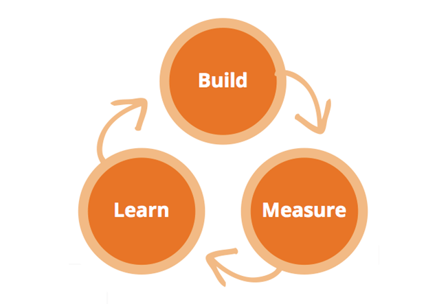

The craftsmanship metaphor
by Rafael Ordog (DeVill)
 @devillsroom
@devillsroom
Metaphors in general
Software engineering
Software craftsmanship
Metaphor
Cognitive Metaphor
“In cognitive linguistics, conceptual metaphor, or cognitive metaphor, refers to the understanding of one idea, or conceptual domain, in terms of another.”
Scope of a metaphor
Understanding of the source domain
A metaphor is an analogy that helps with understanding
A metaphor should be used within a scope
Origin of Software Engineering
What is the purpose of engineering?
Minimise the cost of building, while adhering to constraints
Engineering uses mathematics to optimize
As opposed to proving that the design is correct
Every design is validated
A rather expensive process in case of a plane or car
How would you design a bridge, if you could instantaneously rebuild it for free and test it under a wide range of conditions
Is it expensive to build software?
Design is expensive, building is practically zero cost
The science metaphor
Best practices and standards
Mean time between failure
Mean time to recovery
Ironically the engineering metaphor taught us more about how not to do software development

Glenn Vanderburg: Craft and Software engineering
Unlike in structural engineering building is cheap
Less reliance on mathematics, more on experiments and prototypes
No best practices
Software Craftsmanship
The apprenticeship model of medieval craftsmen works for software
Software development is like a craft
SCOPE: learning from a master
SCOPE: global
Dan has valid points
But all that has nothing to do with the original scope
Learning from a master
Software development is not a craft...
...but it has a lot of things in common with crafts
And not just in terms of learning
Steady delivery of unique products, each with a high standard for quality
Provides reliable estimates for deadlines
Despite each piece of work being unique
Learns from a master while working together
Pair coding is a great opportunity for this
Keeps raising the bar
Treats failure as a learning opportunity

Understands the entire process...
...not just the part he needs to take care of
Understands the domain
Understands the tools
Even the ones he rarely uses
Builds his own tools
Strives to become a master
And passes on his knowledge
Rafael Ördög  @devillsroom
@devillsroom